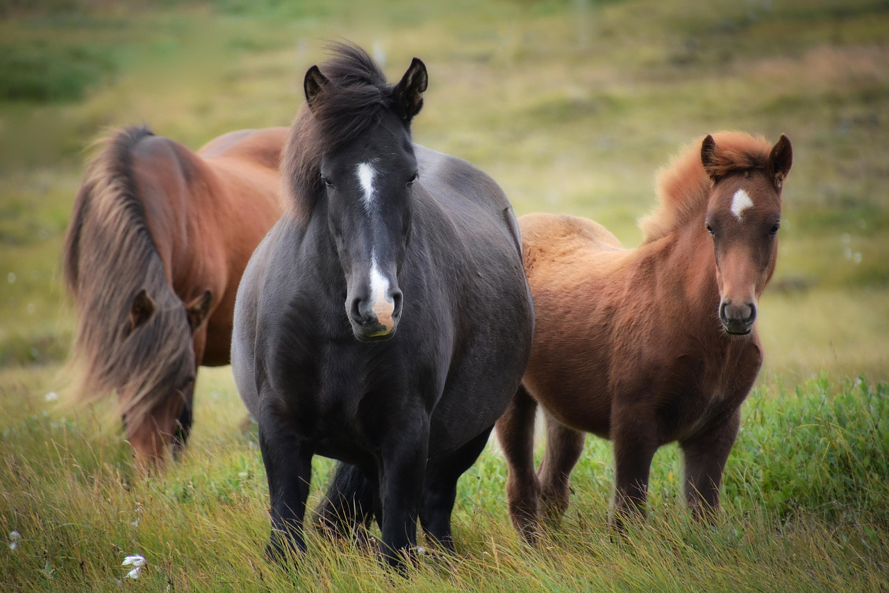
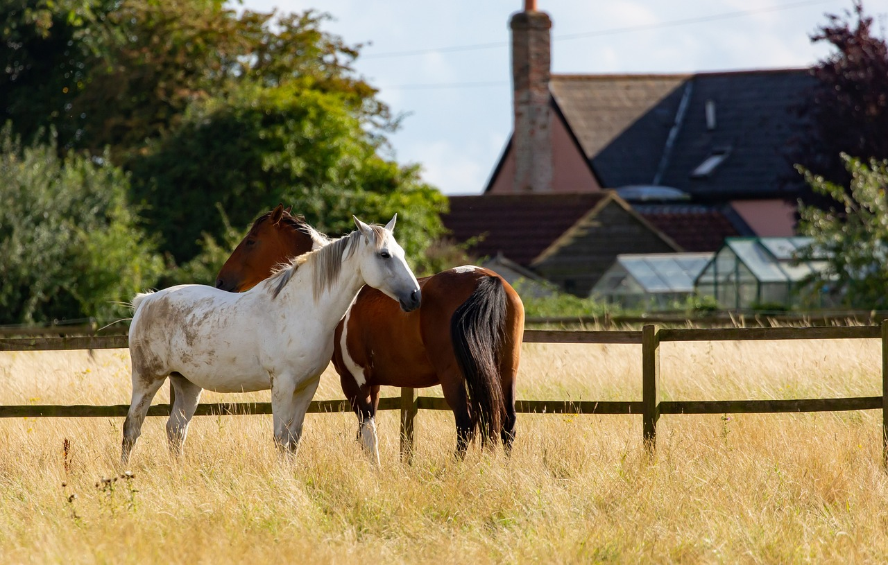
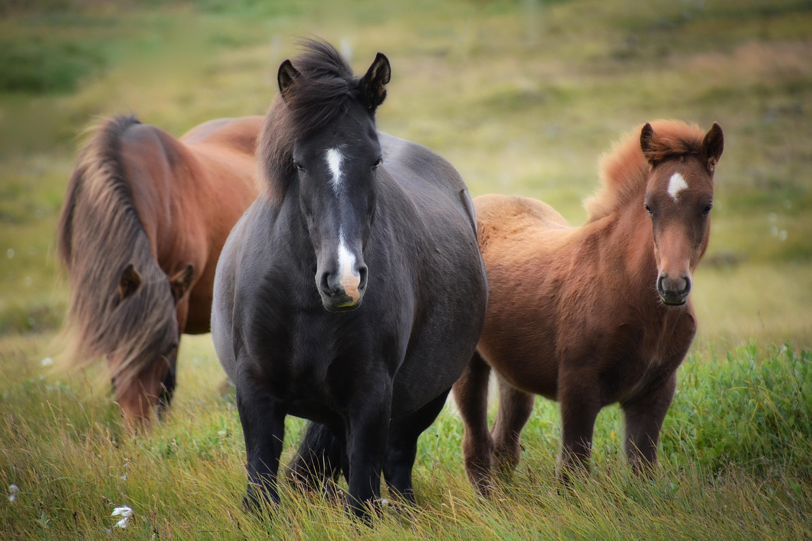
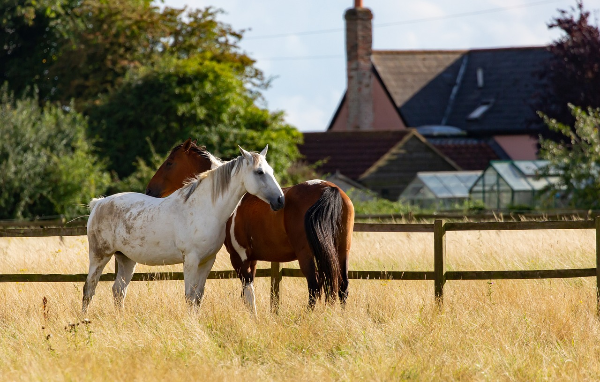

Uma Amizade Que Vem de Longe
Há muitos e muitos anos, os cavalinhos já faziam parte da vida dos humanos. Eles ajudavam no transporte, no trabalho e também eram companheiros fiéis. Hoje em dia, continuam sendo nossos melhores amiguinhos, seja para passear ou só dar aquele cheirinho gostoso no pescoço.
Fofura Terapêutica
Ver um cavalinho saltando, trotando ou até brincando é mágico! Eles brilham em esportes como hipismo e corridas, mas o mais lindo é a amizade entre eles e seus donos — uma parceria cheia de confiança e amor.
Cavalos com o melhor custo-benefício
Pônei Shetland
- Vantagem: Raça muito dóceis e resistentes, ideais para crianças e equoterapia, com menor custo de manutenção devido ao tamanho.
- Uso: Passeios infantis, equitação e tração leve.
Quarto de Milha
- Vantagem: Conhecido pelo temperamento tranquilo, versátil e bom em esportes equestres, como rodeios e trabalho em fazendas.
- Uso: Lazer, esportes e trabalho.
Pampa
- Vantagem: Raça brasileira popular, com temperamento dócil e personalidade amigável, sendo uma boa opção para iniciantes.
- Uso: Cavalgadas de lazer, passeios e equitação recreativa.